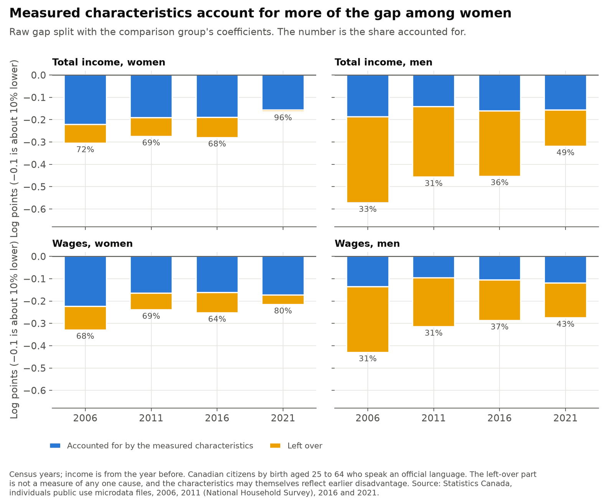
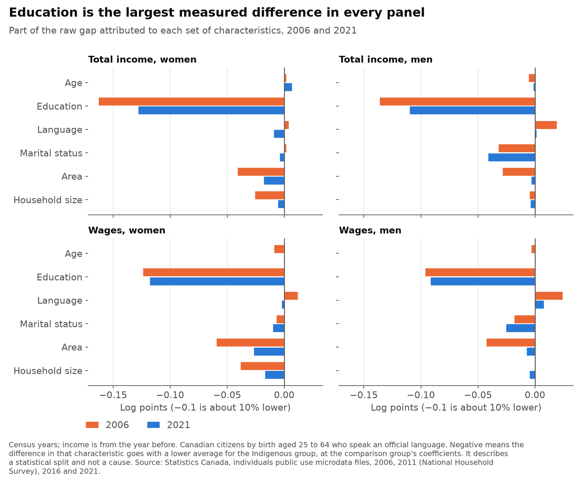
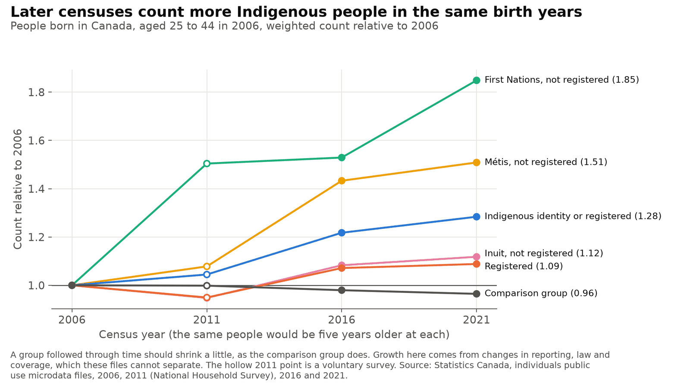

The Indigenous income gap in Canada, 2006 to 2021
How much lower are the incomes and wages of Indigenous people in Canada than those of other Canadians with the same age, education, language, marital status, area and household size? And how did that change? I look at four rounds of Statistics Canada's public census microdata: 2006, 2011, 2016 and 2021, for Canadian citizens by birth aged 25 to 64. The project started as an assignment in a graduate applied econometrics course at Simon Fraser University, which applied the method of Pendakur and Pendakur (2011) to the 2006 Census. I reproduce that work in Python first, then carry it forward.
Personal project: my own analysis of publicly available data. It is not associated with my work for any current or past employer and does not represent their views. The results describe a gap and what goes with it in these files. They don't show what causes it. Nothing here measures the abilities, habits or culture of any group.
The most important caution
The people counted as Indigenous are not the same from one census to the next. Some people report an Indigenous identity in one census and not in the next, in both directions. The laws on who can be registered changed, and so did the questions and which communities took part. A Statistics Canada study that linked people across censuses found that about one in four people reporting an Aboriginal identity in 2016 had not reported one in 2011 (O'Donnell and LaPointe 2019). The public files can't follow people, so a smaller gap could come from changes in income, from changes in who is counted, or both. Section 6 measures how big the change is and how much it could matter.
The part of the gap that measured characteristics don't account for is not a measure of any one cause. It can include things these files don't measure, such as hours worked, the kind of job, where exactly someone lives, tax treatment, differences in how income is recorded, and discrimination. These data can't tell them apart.
At a glance
| Question | Methods | Answer |
|---|---|---|
| How did the gap change? | Weighted regressions by sex and year | It narrowed. With the same characteristics, men's wages went from about 25% lower in 2006 to 14% lower in 2021, and women's from about 10% to 4% lower. |
| How much do measured characteristics account for? | Oaxaca-Blinder decomposition | Roughly a third to a half of the wage gap among men, and roughly 60% or more among women. Education is the largest part. |
| Who does the average cover? | Gaps by group | Very different groups. The largest gaps are among registered men who are band members: 39% lower wages in 2006 and 26% in 2021. |
| How much is 2021 a pandemic result? | Total income less pandemic benefits | A good part. Taking benefits out removes about two thirds of the 2016 to 2021 narrowing in men's total income. |
| Does the 2006 assignment reproduce? | The same regressions in Python | Closely, not exactly. All 32 estimates are within 0.35 standard errors, but the sample is 0.7% larger, for a reason I could not trace. |
| Are these the same people over time? | Counts of the same birth years, and a what-if | No. The same birth years count 28% more Indigenous people in 2021 than in 2006, while the comparison group shrinks 4%. |
The Indigenous group is everyone who reported an Indigenous identity (First Nations, Métis or Inuit) or registered status under the Indian Act. The comparison group is everyone else, except people who reported only Indigenous ancestry, who are set aside. Total income is income from all sources, including government transfers; wages are wages and salaries from employment. A gap is how much lower the Indigenous group's typical income is, in per cent. "All people" compares the two groups as they are, and "same characteristics" compares people of the same age group, highest qualification, official language, marital status, area and household size. Each estimate has a margin of error of about 1 to 3 percentage points either way.
1. The gap narrowed

Among men, the wage gap for people with the same characteristics narrowed by 11 percentage points from 2006 to 2021, and most of that had happened by 2016. Among women it narrowed by 6 points. The change for women from 2006 to 2016 alone is too small to tell apart from no change. For total income, the largest step for both men and women is the last one, which section 4 looks at.
| Per cent lower than the comparison group | 2006 | 2011 | 2016 | 2021 |
|---|---|---|---|---|
| Wages, men, all people | 35% | 27% | 25% | 24% |
| Wages, men, same characteristics | 25% | 19% | 16% | 14% |
| Wages, women, all people | 28% | 21% | 22% | 19% |
| Wages, women, same characteristics | 10% | 7% | 9% | 4% |
| Total income, men, all people | 44% | 37% | 36% | 27% |
| Total income, men, same characteristics | 31% | 27% | 25% | 15% |
| Total income, women, all people | 26% | 24% | 24% | 15% |
| Total income, women, same characteristics | 9% | 8% | 9% | 1% |
Pendakur and Pendakur's later paper, Indigenous Earnings Convergence, uses the full census files in a Statistics Canada research centre and finds the same direction. Their sample, comparison group and starting year are different, so the numbers can't be compared one for one.
Annual wages mix pay with time worked. Among people who worked mainly full-time for 49 weeks or more, the gaps are much smaller: for men, 12% lower in 2006 and 6% in 2021; for women, 4% and 2%. So more than half of the men's wage gap is not there among full-year, full-time workers. This compares two groups of people. It doesn't show that working less is a choice, since it also depends on what work is available.
2. What measured characteristics account for

An Oaxaca-Blinder decomposition asks how much of the gap would remain if the Indigenous group had the same average age, education and other measured characteristics as the comparison group. The answer depends slightly on whose pay patterns are used to value those characteristics, so both are shown.
| Share of the gap characteristics account for | 2006 | 2011 | 2016 | 2021 |
|---|---|---|---|---|
| Wages, men, comparison group's pay patterns | 31% | 31% | 37% | 43% |
| Wages, men, Indigenous group's pay patterns | 49% | 41% | 50% | 54% |
| Wages, women, comparison group's | 68% | 69% | 64% | 80% |
| Wages, women, Indigenous group's | 62% | 70% | 66% | 78% |

Education is the largest part in every year, and more than half of the part characteristics account for. Area and household size matter less in 2021 than in 2006. Among men, nearly all of the narrowing in the wage gap is in the part that characteristics don't account for.
A characteristic that accounts for part of the gap is not a neutral or settled explanation. Education, where people live, marital status and household size can themselves reflect earlier disadvantage, including discrimination. The decomposition is a way of splitting the numbers, not a prediction of what would happen if any characteristic changed.
3. The average covers very different groups

| Wages, same characteristics, per cent difference | Women 2006 | Women 2021 | Men 2006 | Men 2021 |
|---|---|---|---|---|
| Registered, member of a First Nation or band | −10% | −6% | −39% | −26% |
| Registered, not a band member | −14% | +1% | −16% | −6% |
| First Nations, not registered | −14% | −8% | −13% | −11% |
| Métis, not registered | −11% | −3% | −8% | −2% |
| Inuit, not registered | +23% | +6% | −18% | −16% |
Each group is compared with the same comparison group. The groups other than Métis and registered band members are small, with margins of error of about 4 to 25 points. Inuit women's incomes are higher than the comparison group's in every year; the area measure doesn't separate the North, so this isn't a comparison of people in the same places.
Band membership is not the same as living on reserve. The public files have no on-reserve measure, and many band members live off reserve. The original assignment had labelled these groups as if they were about reserves, and that is corrected here. Pendakur and Pendakur's later paper, which can see where people live, finds much less narrowing for registered people living on reserve, so the narrowing among band members here may come mostly from those living off reserve.
4. 2021 and the pandemic
Income in the 2021 Census is from 2020 and includes federal pandemic benefits such as CERB, which more Indigenous people received: 38.7% of Indigenous women and 37.6% of Indigenous men in this sample, against 29.1% and 28.5% in the comparison group.
| Total income, same characteristics, per cent lower | 2016 | 2021 | 2021 without benefits |
|---|---|---|---|
| Women | 9% | 1% | 6% |
| Men | 25% | 15% | 22% |
| Registered men who are band members | 44% | 27% | 38% |
Taking the benefits out removes about two thirds of the narrowing in men's total income from 2016 to 2021, and about 60% of the narrowing in women's. So the 2021 total income figures should not be read as a new normal. Wages don't include benefits and are a better guide to the trend, though 2020 was a disrupted year for work too.
5. Reproducing the 2006 assignment
The assignment ran regressions of log total income and log wages, separately for women and men. The Python version follows the same steps, and all 32 group estimates are within 0.35 standard errors of the assignment's, with none changing sign. The samples differ by about 2,500 people, 0.7%. The assignment used a copy of the file converted through R that I no longer have, and dropping the highest incomes doesn't reproduce its numbers, so I don't know the cause. The code here reads Statistics Canada's file directly.
To compare across years, the model uses only variables that exist in every census. On 2006 data, those changes move the group estimates by 0.053 log points at most.
6. Whether these are the same people

By 2021, about a quarter of the Indigenous group in these birth years was not counted as Indigenous in 2006. Some of the growth in registered status follows changes in the law. The communities taking part also changed. Statistics Canada says these influences can't be separated.
The gap within these same birth years narrowed too. A simple what-if gives a sense of how much changed reporting could matter: suppose everyone added to the group since 2006 had the comparison group's income.
| Same birth years, same characteristics, per cent lower | 2006 | 2021 | 2021 in the what-if |
|---|---|---|---|
| Wages, men | 29% | 13% | 17% |
| Wages, women | 10% | 5% | 6% |
| Total income, men | 33% | 15% | 20% |
| Total income, women | 6% | 6% | 7% |
Even then the men's wage gap narrows, from 29% to 17%. This is only a rough check. It uses the net change, while many more people move in and out than the net suggests. It says nothing about the people who stopped reporting, whose incomes can't be seen. And gaps change with age, so these rows mix getting older with change over time.
Other cautions
- 2011 is a different kind of survey. The National Household Survey was voluntary, with 68.6% of households responding, against 95.7% for the 2021 long form. It is shown with a hollow point in the charts.
- Coverage of reserves changes. The number of reserves and settlements not fully counted was 22 in 2006, 36 in 2011, 14 in 2016 and 63 in 2021, and the public files can't restrict to communities counted in every year.
- Where income data come from changed, from the form or tax records in 2006 and 2011 to tax and benefit records alone in 2016 and 2021.
- People without income or wages are left out. The share of Indigenous people with at least $1,000 in wages is lower than in the comparison group, and that difference did not shrink.
- The area measure is broad, with no province, North or reserve breakdown.
- "Registered" stands for Statistics Canada's variable "Registered or Treaty Indian status", a legal term under the Indian Act. Older sources say "Aboriginal", which appears here only in their titles and findings.
Data
Statistics Canada individuals public use microdata files: 2006 Census, 2011 National Household Survey, 2016 and 2021 Censuses. Sources include O'Donnell and LaPointe (2019), "Response mobility and the growth of the Aboriginal identity population, 2006-2011 and 2011-2016", and Pendakur and Pendakur (2011), "Aboriginal Income Disparity in Canada", Canadian Public Policy.
Adapted from Statistics Canada; this does not constitute an endorsement by Statistics Canada of this product.